Поиск картин

Утро в сосновом лесу (1889)
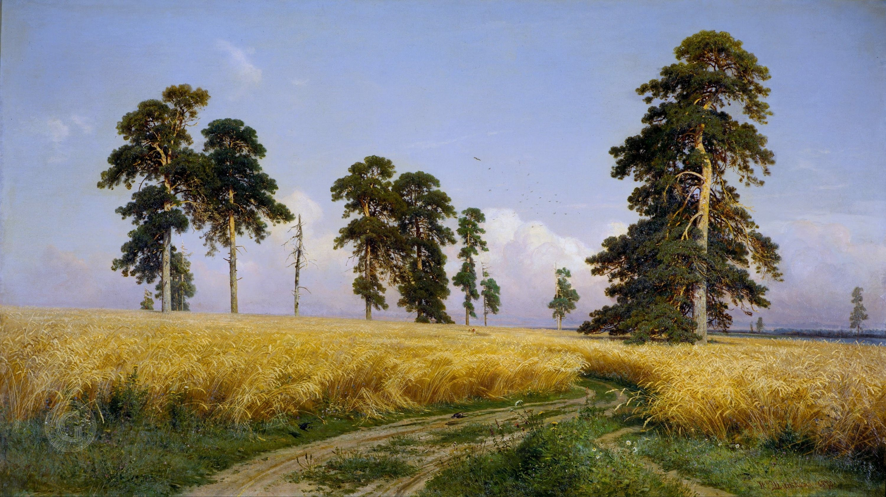
Рожь (1878)
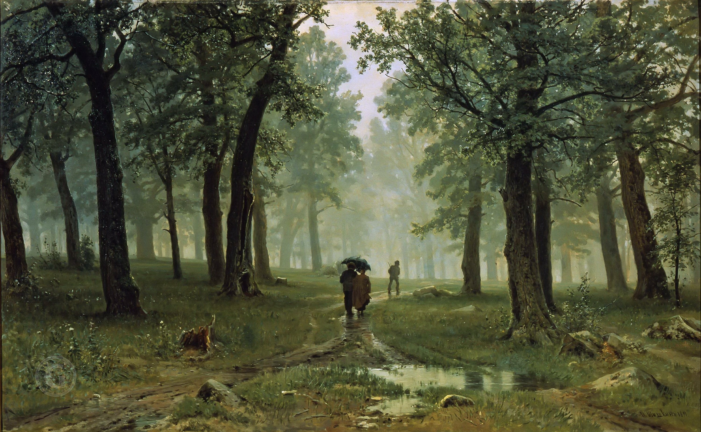
Дождь в дубовом лесу (1891)
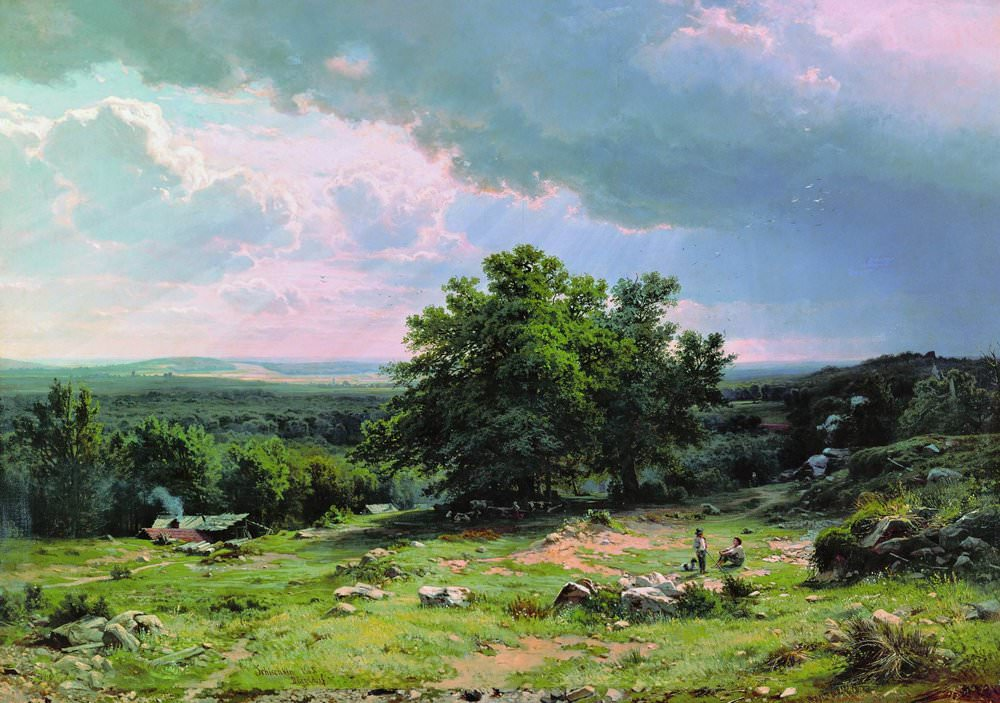
В окрестностях Дюссельдорфа (1865)
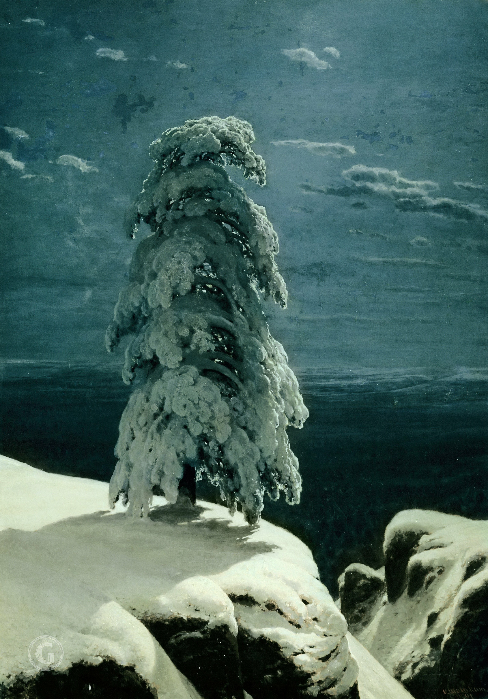
На севере диком (1891)
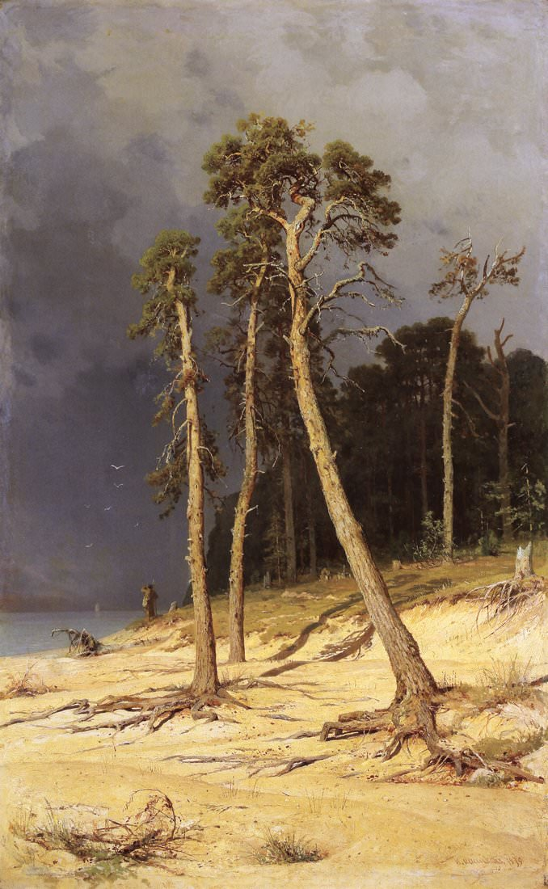
Песчаный берег (1879)
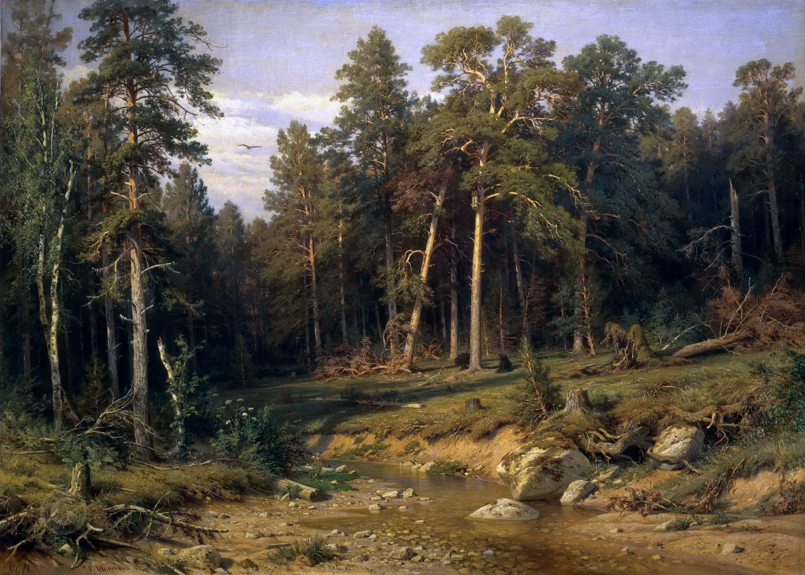
Сосновый бор. Мачтовый лес в Вятской губернии (1872)
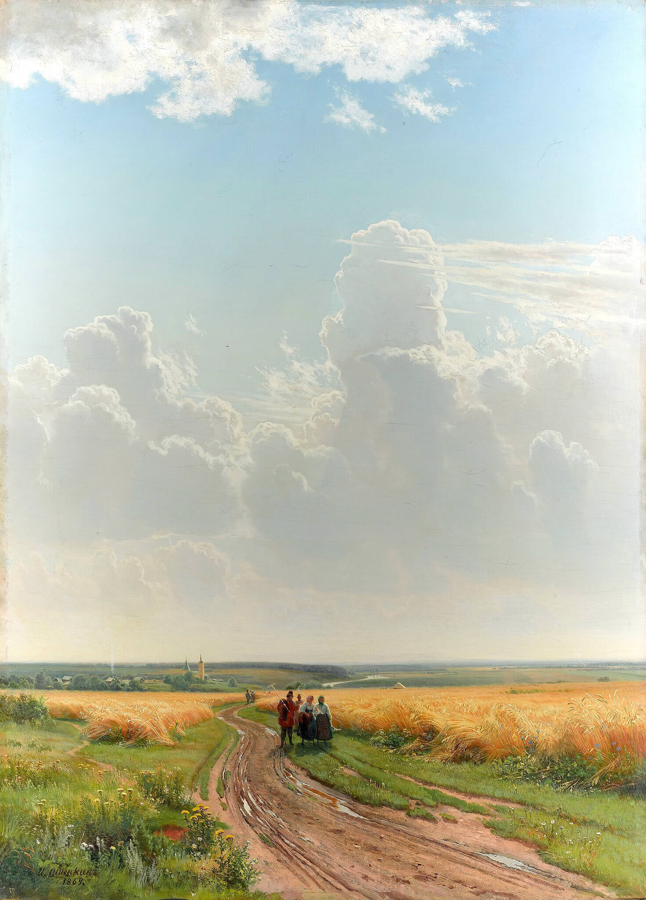
Полдень. В окрестностях Москвы (1869)
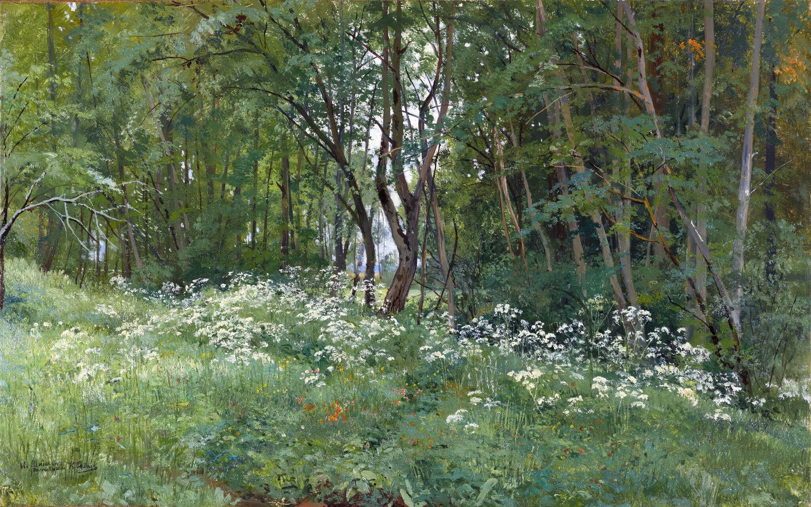
Цветы на опушке леса (1893)
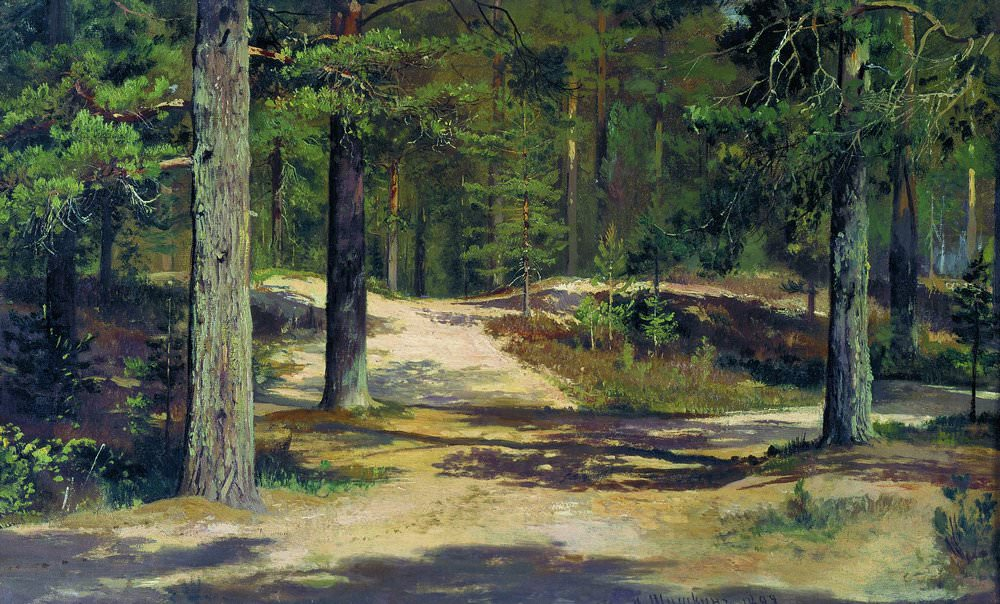
Сосновый лес (1889)
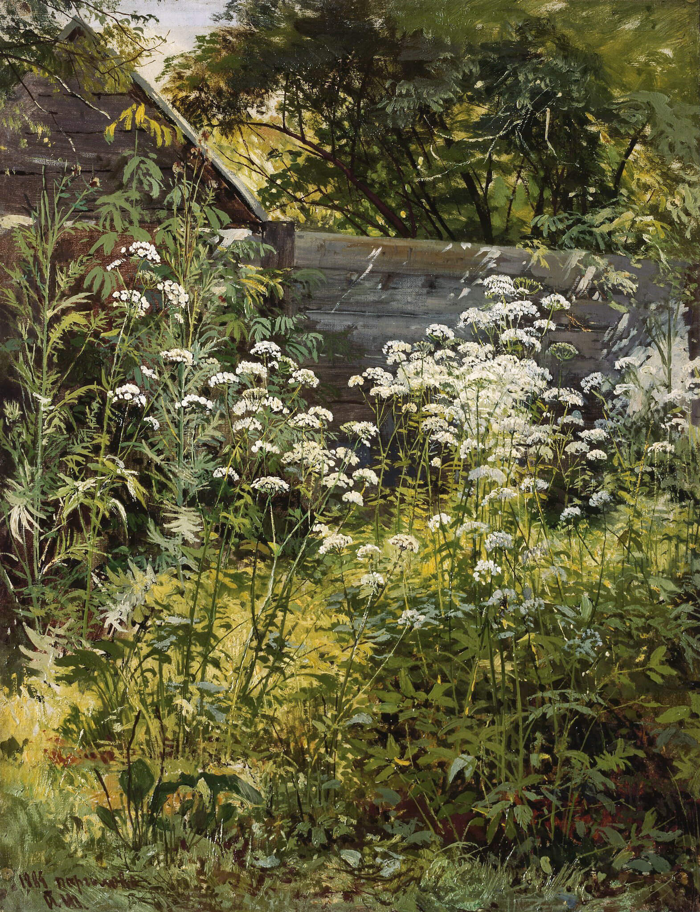
Уголок заросшего сада. Сныть-трава (1884)
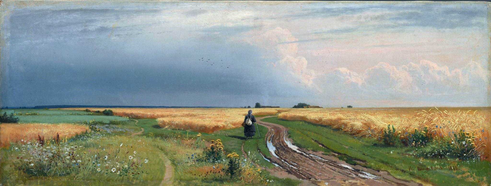
Дорога во ржи (1866)